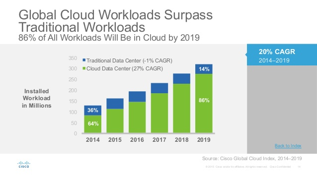
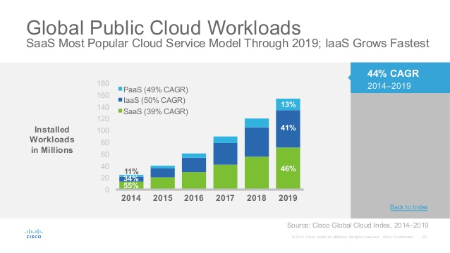
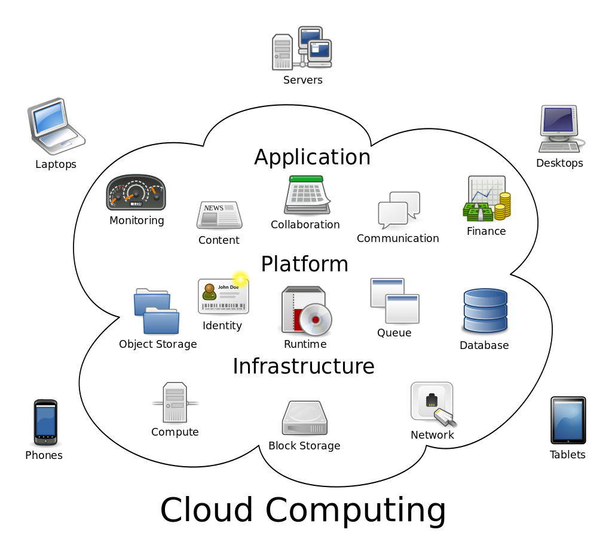
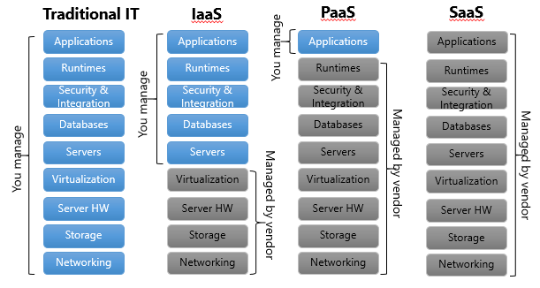
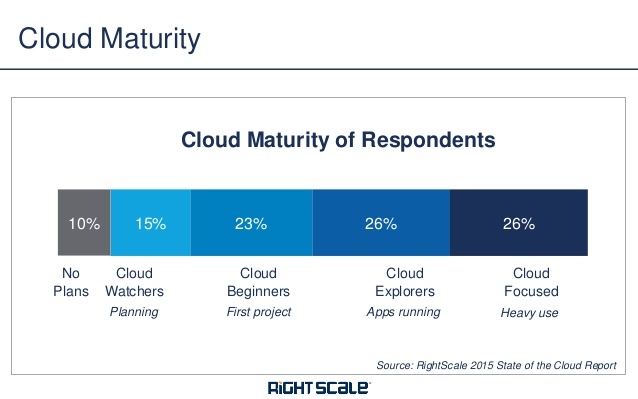
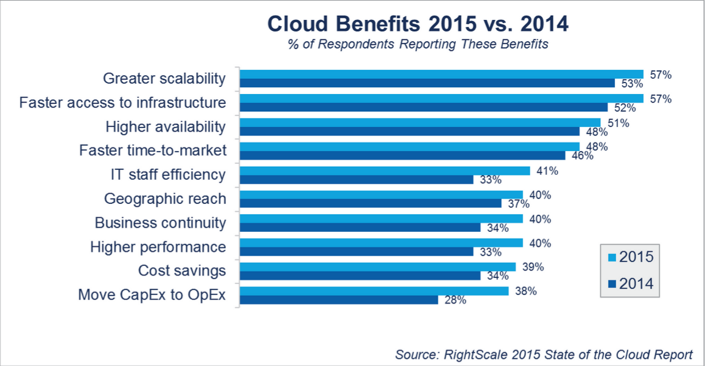
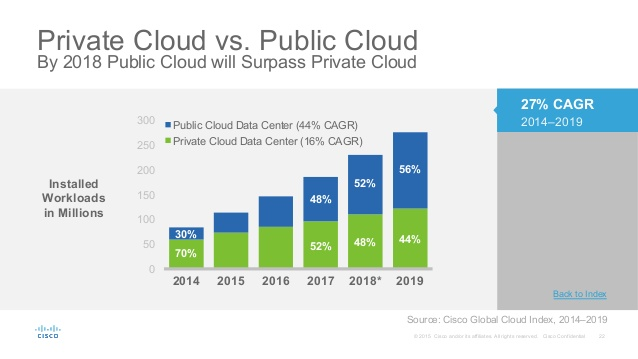

IaaS. a Solution for Enterprise.

Internet Tehnologies have entered practically in every part of our life in the last years. This result is due to the fast progress of hardware and software tehnologies and the second is the big positive impact on our everyday life, making it more simple and enjoyable. Many companies and the business in general also profits from this trend. Here already is not about fun but real business world where like in sports every second counts. At least a company without a website risks to break the relationship with their customers. But a website is a drop from an ocean. Much more important for a business are costs saving and the processes optimization. In this sense companies appeal to outsource services for their computing infrastructure because it allows companies to focus on their main mission and business instead of investing time and money for creating and managing the infrastructure.

More and more companies adopt, are planning to adopt or consider adoption of IaaS because they start to understand the benefits of infrastructure as a service, and the main are: costs saving, flexibility, scalability and efficiency.

Cloud Computing. What is IaaS?
Cloud Computing is a relatively a new technology in computing. It represents a distributed asambley of computing services. This concept consits of three branches: IaaS (Infrastructure as a Service), PaaS (Platform as a Service) and SaaS (Software as a Service). And for now we choosed to describe the Infrastructure as a Service model (IaaS).

IaaS (Infrastructure as a Service) is the technology with wich many components of a physical infrastructure like servers, storage, network and software are provided as virtual service. That means everyone can build it's own Virtual Data Center in just seconds with no need of investing a lot of time and money in buying hardware, software, racks, hire IT staff and so on. But the most important advantage of the IaaS technology is the scalability, the posibility to adjust your resources with your business needs even every hour, cause the most important IaaS Providers have an hourly billing system.

IaaS, a Solution for Enterprise.
So the reason why organizations are using IaaS is that it ensures better results minimizing the costs and the time they are achieved. In the last decade top managers changed seriously the way they manage the enterprise business.

The concept of IaaS includes some valuable features and with the increasing popularity of this Service a lot of small hosting companies took over the notion "Cloud" for the description of their Services while their Services are far away from IaaS and Cloud Servers. It is like telling that you sell airplanes but they could not fly. For this reason users should know the difference of a Cloud Server from a VPS (Virtual Private Server) and here are the main features:
- the Resources are provided as a service. The user is not responsible for the hardware, for it's attrition, for the network connections, internet connection, electricity and other Data Center services like air conditioning, security and professional staff;
- the Scalability. The user can upscale or downscale the resources whenever he needs. This is a very important feature that has it's advantages even more nowadays when a lot of startups that could not predict the popularity of their product/service or other companies that tests their products;
- pay-as-you-go billing. The user is billed only for the resources he used. Most important IaaS Providers have hourly billing cycles and the user pays only the time they used the resources. This is also a very important feature when every company calculates a lot of indicators trying to increase the productivity and to reduce the costs and the budgets;
Why Companies Migrate to IaaS?
More and more companies are finding infrastructure as a service to be an effective instrument to reach their business goals and this is due to that it is highly flexible and scalable for different business situations:

- Organizations with seasonal or cyclical business periods may profit from this type of service as their requirements for resources may differ from a period to another, like from a month to another, as well as from an hour to another. For example News Sites or Blog Sites in case of Breaking News or some interesting posts that will drive much traffic on the site only for a small period of time. So enterprises can reduce their costs during inactive periods and benefit of high capacity resources during active periods.
- Also during development or testing a new product/service, a new business niche or a new marketing strategy are taking places big usage spikes so that infrastructure as a service is the best-suite instrument in this cases.
- Migrating the CRM (Customer Relationship Management) application to IaaS platform could be done easily without having to add new hardware and storage resources and minimizing the workloads for the IT department that will execute this operation and manage it after.
- Startups that could not predict the demand of their product/service or simply do not have financial resources to buy hardware and build their own infrastructure. With the infrastructure in the cloud there is no need of much pshysical space and big IT staff.
- Companies that grow very fast and simply do not have time to grow or build their own infrastructure;
- Enterprises that should make investments in new hardware for existing or a new project, or for big apllications and want to reduce the costs on hardware and IT staff. Many companies understand that focusing on their business goals is the main ingredient for growing the business, so the time and money spent on creating and managing the infrastructure does not contribute to a higher competitiveness and it's better to outsource this staff.
- Companies that unterstand that the uptime is important for a organization. With a SLA (Service LEvel Agreement) the most important IaaS Providers are promising to keep the infrastructure up and running for 99,9 %.
Some business have special requirements for the hardware and in this case they can not use Virtual Infrastructure but are supposed to build a Dedicated Infrastructure.
Benefits of IaaS.
Nowadays, in a such competitive business environment, top managers do not have time to think if their infrastructure will keep pace with the growth of the company and they find IaaS the perfect solution for this problem. According to StateTech there a 5 Important Benefits of Infrastructure as a Service for wich enterprises use it: cost savings, scalability and flexibility, faster time to market, support for Disaster Recovery, Business Continuity and high availability, and focus on business growth.
- Cost saving: The fact that IaaS gives the opportunity to create a Virtual Data Center contributes to lower infrastructure costs. An enterprise has no longer need to make big investments in a Data Center Infrastructure, to manage it, ensure the uptime and replace the old equipment. Adding to this the pay-as-you-go billing asures also cost savings. This model avoids big fixed monthly or annual fees for resources enterprises may not use.
- Scalability and flexibility: Probably the most important benefit of IaaS is the on-demand self-service. That means the company can upscale or downscale in seconds to best-fit its requirments.
- Disaster Recovery: In case of a disaster strike, IaaS provides quick recovery with no loss of data. Especially enterprises with several disparate locations profit from this model having a single disaster recovery plan and thus minimizing costs.
- Focus on business growth: Migrating to IaaS model companies may have more time and resources to focus on their main direction of business.
- Self-Service: True IaaS Providers provide an user-friendly Control Panel from where the user controls its infrastructure. Also they provide API access.
Private or Public Cloud?
Delivery of infrastructure as a service may be done in 3 ways: public cloud, private cloud and hybrid cloud. Each way has its benefits for different requirements.

- Public Cloud: Here the cloud infrastructure of the provider is shared between more customers, so the resources and the bandwidth are shared. This model is recomended for organizations that different kinds of spikes in their business so they could not predict their usage, and especially for organizations that deliver noncore applications and virtual desktop infratsructure.
- Private Cloud: The computing, network and storage resources are dedicated to a single organization in this model. So the security and availability of the services will be at the highest level thanks to the dedicated infrastructure. This is a good choice for big organizations like government or finance companies.
- Hybrid Cloud: A hybrid model balances both model advatages and this is why it became popular. A company may use it in case it want to keep a database with severe security requirements on a private infrastructure, to be more confident in its privacy, and the other applications on a public cloud for cost saving and more flexibility. An other case for hybrid cloud is in case an enterprise use the public cloud for development and testing but the private cloud for production, also have a good balance of cost saving and security.
Choosing the IaaS Provider.
Atfer the enterprise decided to move to a public cloud it should choose the right IaaS Provider. It will not be a hard challange for a veteran CIO, who is used to IT tehnologies. But for a newcomer will be quiet difficult to understand the difference between the offers on the market and the quality of service of different Providers. In order do make a right decision for your enterprise and for their requirements to get the best service, first consider these criterias for choosing an IaaS Provider:
- SLA (Service Level Agreement) is important: Now that many cloud providers apear and many are fake, it is the cutomers job to understand a provider's SLA is real or not.
- Balance between performance and cost: Most of the reports show that price is not the first decision factor for chooosing a provider, more important is the performance and the quality of service, so try to make a balance between them not to be in detriment of enteprise but at the same time to fit your budgets.
- Moving to the Cloud: It consists of 3 steps: migration, integration and management. It's the CIO's job to ensure a successful migration, cause it could turn into daunting job in case you were on older environment, different OS or type of servers.
More and more companies are finding infrastructure as a service to be an effective instrument to reach their business goals and this is due to that it is highly flexible and scalable for different business situations.
Conclusion.
The notion of "Cloud Computing" and "IaaS" apeared long time ago but some oppinions says it was introduced on a large scale use at the "Search Engine Strategies Conference" by "Eric Schmidt". From that moment Cloud Computing started to be more and more popular and big companies like Amazon, Google and Microsoft started to promote Cloud Computing intensively. Many companies confirm that they made a good choice moving to IaaS, benefiting of flexibility and cost saving for growing the enterprise, become more efficient and remain competitive. Even though it sounds good, for a succesfull implementation of IaaS an enterprise should consider and its management over the time, and here a lot depends of the IaaS Provider choosen.